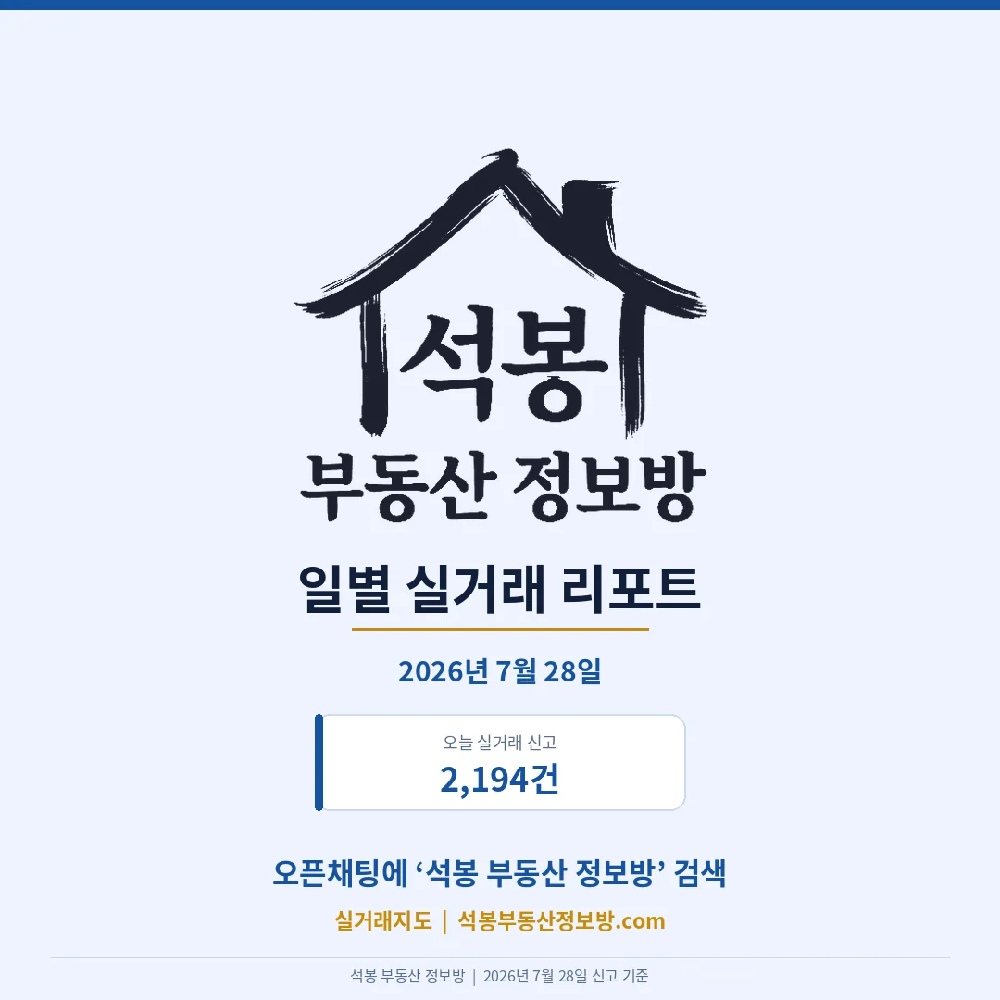
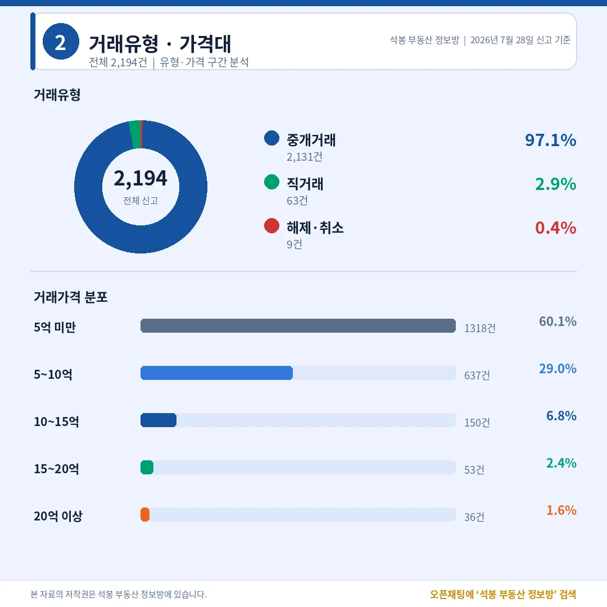
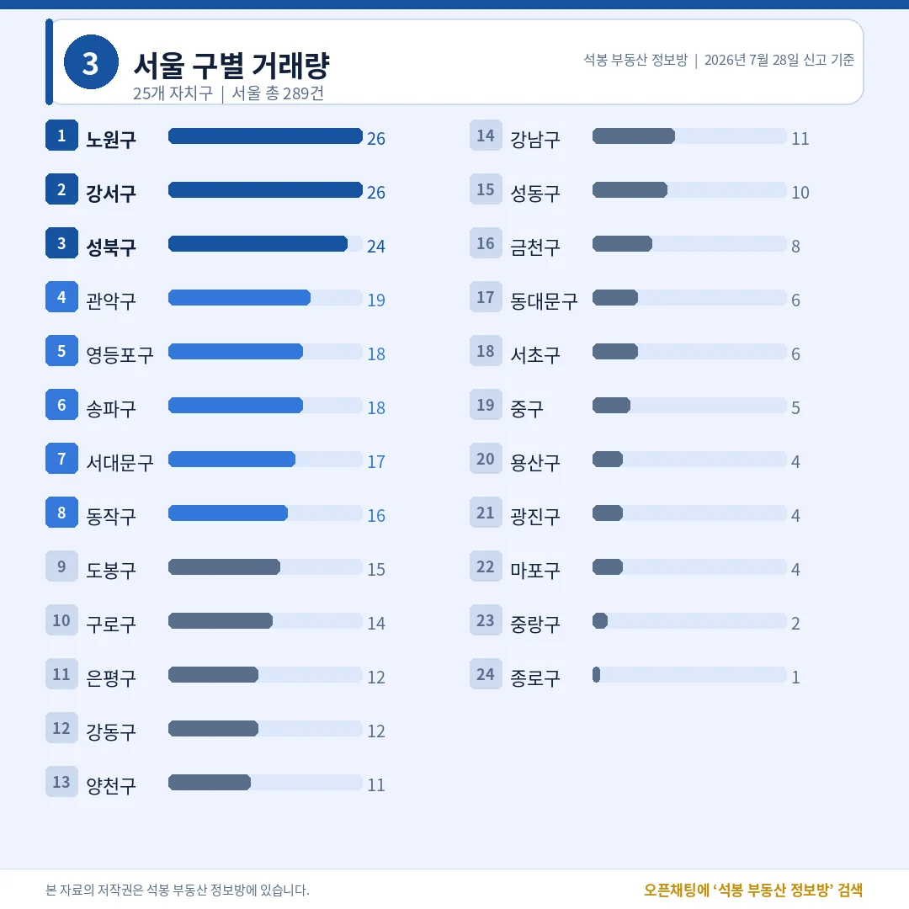
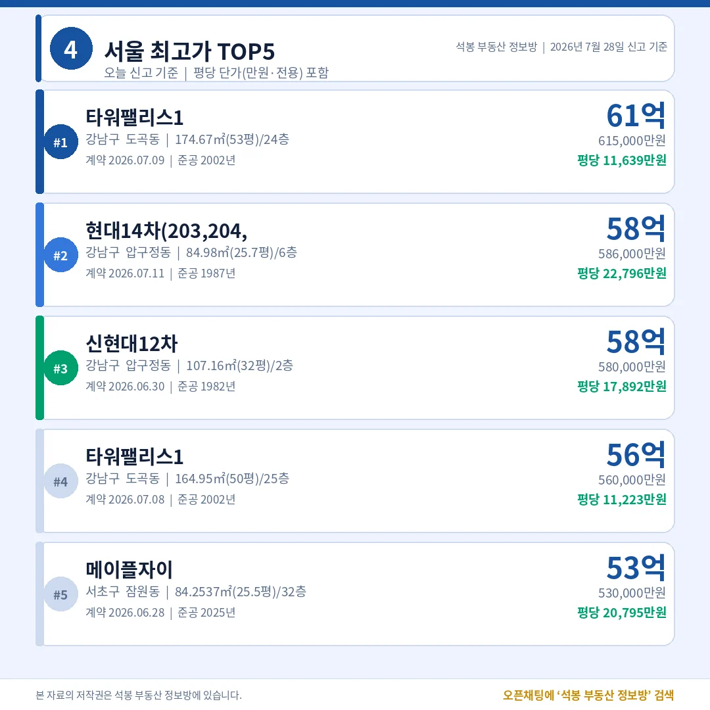
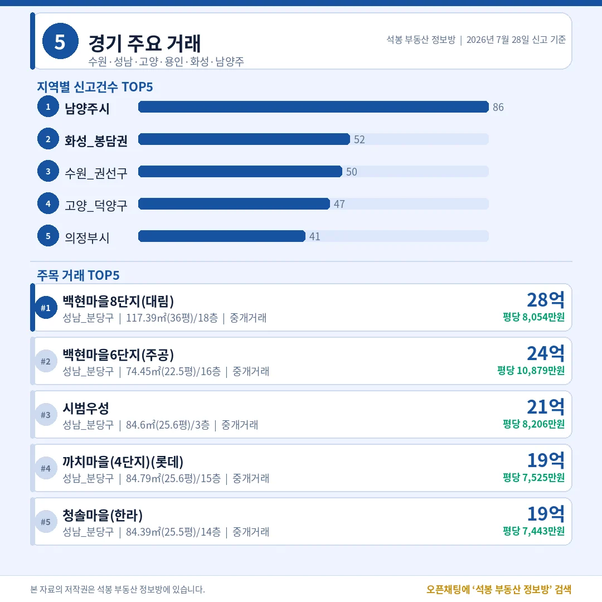
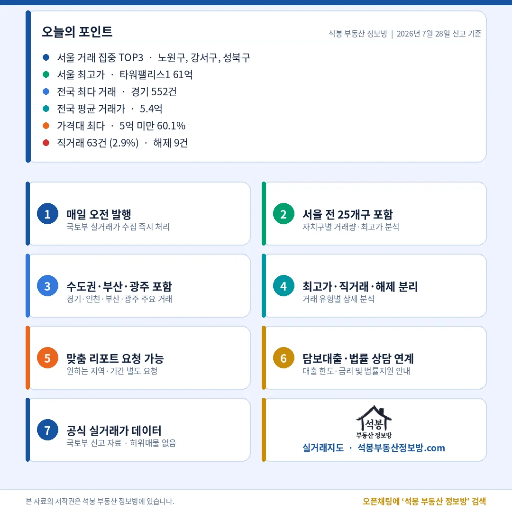

7월 28일 신고된 전국 아파트 실거래는 2,194건입니다. 거래량 상위는 경기(552건)와 서울(288건)이 나눠 가졌고, 서울 안에서는 노원구와 강서구가 26건씩으로 나란히 1위였습니다. 그런데 가격 상단은 이야기가 다릅니다. 오늘 서울 최고가 1~4위 가운데 셋이 강남 도곡동 타워팰리스와 압구정 현대·신현대, 즉 20~40년 된 구축이었습니다. 거래는 중저가 실수요가 채우고, 최고가는 재건축을 바라보는 강남 구축이 찍는 하루였습니다.
오늘 시장 한눈에: 직거래 2.9%로 잠잠

신고 2,194건 가운데 계약이 살아 있는 유효거래는 2,185건이었고, 취소된 해제는 9건에 그쳤습니다. 가족·지인 간 거래로 보는 직거래(공인중개사를 끼지 않은 거래)는 63건, 유효거래의 2.9%였습니다. 지난주까지 하루 10%를 넘나들던 직거래 비중이 크게 내려앉은 모습입니다.
가격대는 여전히 중저가에 무게가 실려 있습니다. 3억 미만이 31.5%, 3억~6억이 39.6%로 6억 미만 거래가 전체의 열에 일곱(71.1%)을 차지했습니다. 반대로 15억 이상 고가 거래는 4.1%(89건)뿐입니다. 숫자로 보면 시장의 대부분은 서민·실수요 가격대에서 돌아가고, 뉴스에 오르는 수십억대 거래는 소수라는 점이 오늘도 확인됩니다.
어디서 거래됐나: 노원·강서 나란히 26건

지역별로는 경기가 552건으로 가장 많았고 서울 288건, 부산 215건, 인천 187건이 뒤를 이었습니다. 서울·경기·인천을 합친 수도권 비중은 47.0%로, 전국 거래의 절반 가까이가 수도권에서 나왔습니다.
서울 안에서는 노원구와 강서구가 각 26건으로 공동 1위, 성북구가 24건으로 뒤를 이었습니다. 노원은 지난 24일 데일리에서도 거래량 1위로 짚어드렸던 지역인데, 오늘도 특정 단지에 물량이 몰린 흔적 없이 여러 단지에 흩어진 실수요 거래였습니다. 반면 강남구는 11건, 서초구는 6건에 그쳐, 거래 건수만 보면 강남권은 오히려 한산했습니다. 사는 사람이 많은 곳과 비싼 값이 찍히는 곳이 다르다는 이야기입니다.
오늘의 최고가: 강남 구축이 상단을 채우다

오늘 서울 최고가는 강남구 도곡동 타워팰리스1의 전용 174.67㎡(52.8평)로 61.5억원이었습니다. 평당(전용 기준) 11,639만원. 2002년 준공된 초고층 주상복합으로, 대형 평형 자체가 귀해 절대가가 높게 찍혔습니다.
눈여겨볼 대목은 2·3위입니다. 압구정 현대14차 전용 84.98㎡(25.7평)가 58.6억원, 신현대12차 전용 107.16㎡(32.4평)가 58.0억원에 손바뀜했습니다. 두 곳 모두 1980년대 준공된 40년 안팎 구축인데, 현대14차는 평당(전용) 무려 22,796만원에 달합니다. 건물이 낡았는데도 이 값이 나오는 건 재건축 뒤 새 아파트가 될 땅값을 미리 사는 것이기 때문입니다. 압구정은 서울에서 재건축 기대가 가장 크게 반영되는 곳이라, 전용 평당가가 신축보다 오히려 높게 형성됩니다.
비교해 보면 대비가 뚜렷합니다. 서초구 잠원동 신축 메이플자이(2025년 준공) 전용 84.25㎡(25.5평)는 오늘 53.0억원, 평당(전용) 20,795만원에 거래됐습니다. 지은 지 1년 된 새 아파트보다 40년 된 압구정 구축의 평당가가 더 높은 셈입니다. 강남 최상단에서는 '새것'보다 '재건축 될 자리'가 더 값나간다는 흐름이 오늘 숫자에 그대로 담겼습니다.
수도권 밖은 어땠나: 부산·대구·광주가 지방 상단

지방에서는 부산이 215건으로 가장 활발했고, 대구 121건, 광주 111건, 경남 106건, 대전 105건 순이었습니다. 경기 안에서는 남양주시가 86건으로 가장 많았고 화성 봉담권(52건), 수원 권선구(50건), 고양 덕양구(47건)가 뒤를 이었습니다. 수도권 외곽과 지방 광역시의 중저가 단지에서 실수요 거래가 꾸준히 이어지는 모습으로, 오늘 전국 거래의 뼈대를 이 구간이 받치고 있었습니다.
서울에서도 강남 최상단 말고 용산이 눈에 띄었습니다. 한강로3가 센트럴파크 전용 102.86㎡(31.1평)가 35.9억원에 거래되며 서울 상위권에 이름을 올렸습니다. 강남·서초·용산으로 이어지는 한강변 축이 오늘도 고가 거래의 중심이었습니다.
오늘의 인사이트

오늘 2,194건은 두 개의 다른 시장을 한 장에 보여줬습니다. 거래량은 노원·강서·성북 같은 서울 중저가와 경기·지방 실수요가 채웠고, 6억 미만 거래가 전체의 71%를 넘었습니다. 반면 값의 상단은 강남 도곡·압구정 구축과 서초 신축이 60억 안팎에서 다투는, 전혀 다른 세계였습니다.
특히 40년 된 압구정 구축의 전용 평당가(22,796만원)가 1년 된 잠원 신축(20,795만원)을 앞선 대목은, 강남 최상단 가격이 지금 건물이 아니라 재건축 이후를 사는 값으로 움직인다는 점을 다시 보여줍니다. 직거래 비중이 2.9%로 낮아 신뢰도 높은 거래가 대부분이었던 하루라, 이 대비를 액면 그대로 읽어도 무리가 없습니다.
원자료: 국토교통부 실거래가 공개시스템(2026년 7월 28일 신고분) · 편집·제작: 석봉 부동산 정보방 · 본 자료는 정보 제공 목적이며 투자 권유가 아닙니다.